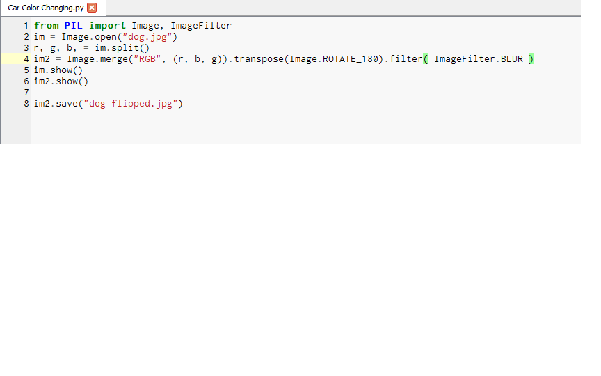
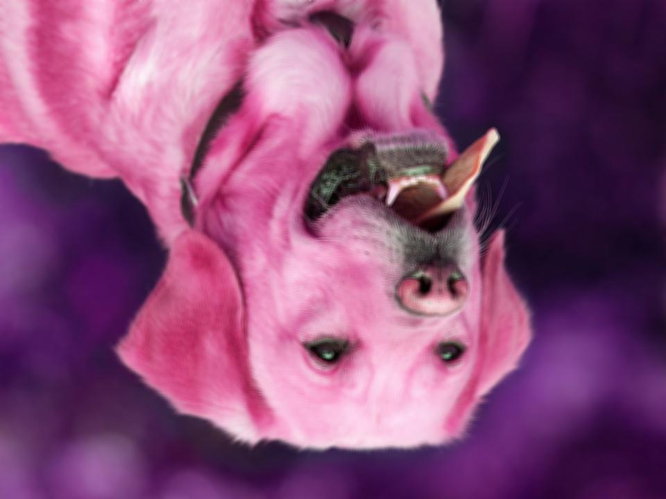
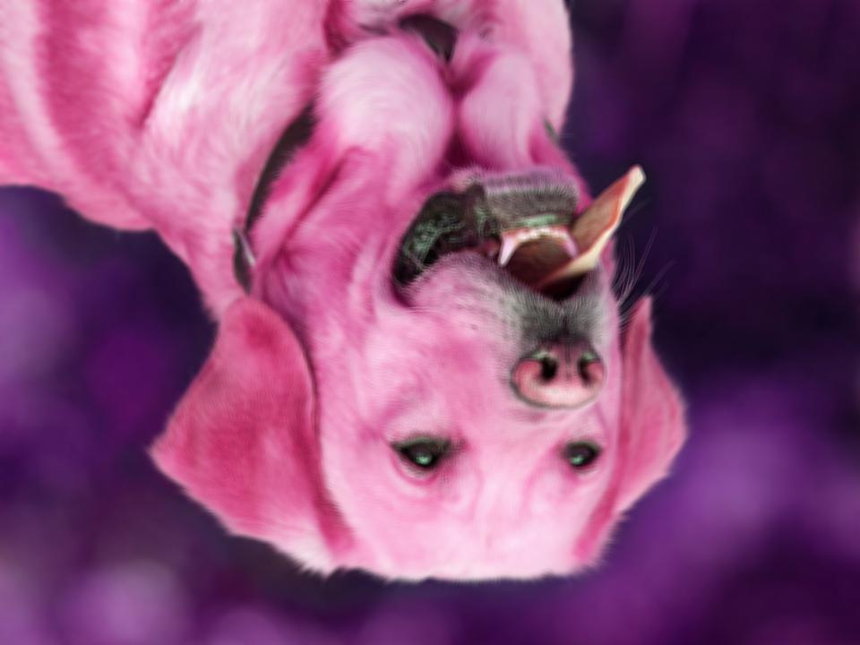
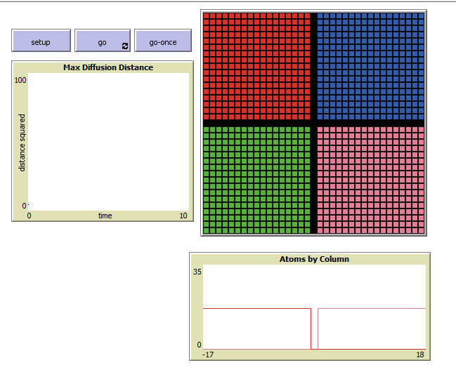
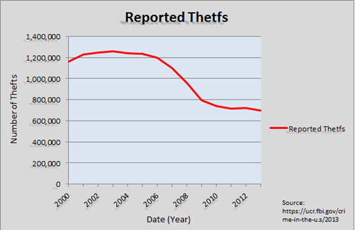
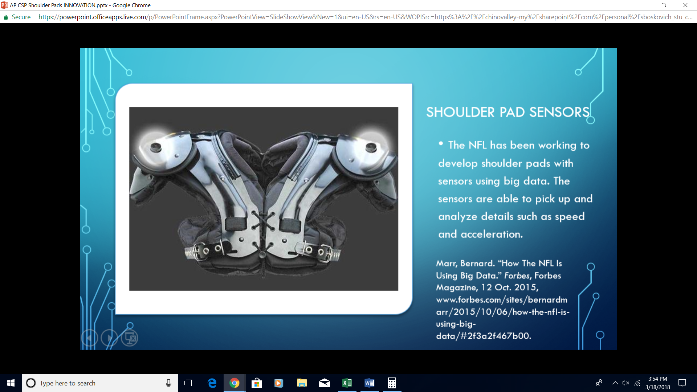

SCRATCH PROJECT
This is a link to my first project on Scratch
During this project, I have learned many new programming techniques including how to switch a character's motion if a certain instance is true, Doing this project was very fun, as the decisions to make for different endings makes the story interactive and different almost every time. My code uses many different algorithms, including a few that can change the setting of the story at the click of a button. The code uses algorithms to hide characters in one story from another story, or vise versa. I have learned a few new coding tricks, including how patterns can make a cool effect, like as 1 character which has 2 different costumes can do movements such as squats. I had lots of fun programming the different stories with the motions of the characters.
APP INVENTOR PROJECT
This is a link to my first project on App Inventor!
During this project, my partner, Bradley, and I learned how to use MIT App Inventor to make a Western-themed two player dueling game. This game used block coding similar to Scratch, with more complex code blocks, to prepare us for structured languages. The code we used was able to have multiple screens, so we made a start/home screen, an introduction screen, a music menu, and the game screen itself. We used two cowboy characters as the different players, each one with a unique speed difference. The cowboys move up and down automatically, but the user can control when to fire their weapon at the other player. From this project, I really learned how to use the coordinant system better in coding and direction is everything. I also learned how to create a "barrier" around the screen, meaning if something were to hit it, the object would either bounce or disappear. This code uses many integers for position and speed, as well as algorithms that control the direction the cowboy faces. I had lots of fun testing out the program with others, and watching how the cowboys reacted to certain parts of the code.
PYTHON PROJECT
This is my first Python Project!
During this project, my partner, John, and I had to create a periodic table quiz. This quiz, written entirely in Python, gave the user a choice between three quiz types, depending on how the user wished to be tested. The user can either start off with the name, atomic symbol, or atomic number, then has to find either the atomic number or the name. This code used lots of strings to instruct the user which how to answer each question and to even tell the user the question asked. The code uses integers to select a random element, atomic symbol, or atomic number. I had a lot of fun on this project learning the basic foundation for Python, as well as the new materials, including docstrings and loops. This project helped to develop me as a programmer because it forced me to not only understand the material and the language of Python, but how to form the code to the right pattern that would be able to function as a working Periodic Table Quiz.
IMAGE ARTIST PROJECT
 

For the Image Artist project, my partner, Austin, and I took the picture of a yellow labrador retriever off of the Internet. From there, we were able to write some code, manipulating the image. The colors of the dog changed, going from a golden yellow to a pink. In addition, we were able to rotate the picture 180 degrees so it was upside down and make the picture blurry. Finally, we were able to write a line of code that would save our new image to the same folder that the original picture was stored in. In this project, we learned that we are able to manipulate an image to our specific desire. Using color changes, orientation changes, and pixellation changes, we manipulated the image from the image on the left to the image on the right.
SIMULATION PROJECT

This activity we completed on the program NetLogo was a simulation program that demonstrated how simulations work. In this case, we were diffusing 4 substances which would evenly disperse across all of the tiles on the grid. My partner, Austin, and I started with a simulation using 2 different substances. Our goal, which was to make a significant edit, was by adding 2 more substances. After a while, we achieved our goal, having 4 different substances, 1 in each corner, to combine and mix. From this project, my partner and I learned that though simulations may take some time to code, the time required is much preferred, than using an experiment that may take time, money, and other resources.
MALWARE PROJECT
This is the link to my malware project!
For the malware project, my partner, Tiffany, and I had to research a specific type of malware: sality. During our research, we learned how sality, or malware in general, spread from computer. We learned that many forms of malware are spread through human interactions online, like clicking a random link in an email from an unknown user. Sality, specifically, is needs to be downloaded to a microsoft Windows system to corrupt it.
DATA ANALYSIS
For our Big Data project, my partner, Austin, and I had to research a subject that had graphable data, graph it, and make an interpretation of the graph. To find our information, we went to FBI: UCI, where there was a ton of data on a list of reported thefts and crimes. We chose the auto theft, so using the the number of auto thefts reported from 2000 to 2014, we made a graph to show the trend (above). From the graph, after the year 2003, the number of thefts started to drop, whereas before 2003, the rate of thefts continued to increase. While working on this project, I learned how to properly make a graph using code, and how to take numerical data and turn it into a graph that can be easily read and understood.
BIG DATA PRESENTATION
For this project, I had to research an innovation that used Big Data. Once we found an innovation that satisfied the requirements, I had to answer several questions in a speech to teach the class what I learned about Big Data. Big Data was classified into four different main catagories: Volume, Velocity, Variety, and Volcanism. My innovation, special shoulder pads, used mostly Volume, but some Velocity was used as well. Thge shoulder pads collected date such as location, so the sensors had to have a large Volume to store this information so it could later be transormed into data such as speed and acceleration, all of this only coming from location.
LEARNING ABOUT CSS
This portfolio has a specific format that was created using a specific CSS. CSS stands for Cascading Style Sheet. Each style sheet can control things such as text size, font color, background color, etc. This style sheet controls the background color, which is linen, and the font size of the headers. A style sheet, as I learned, can help website owners to write the code once and just call the code on a different screen, giving it the same style without having to recode it the same way.